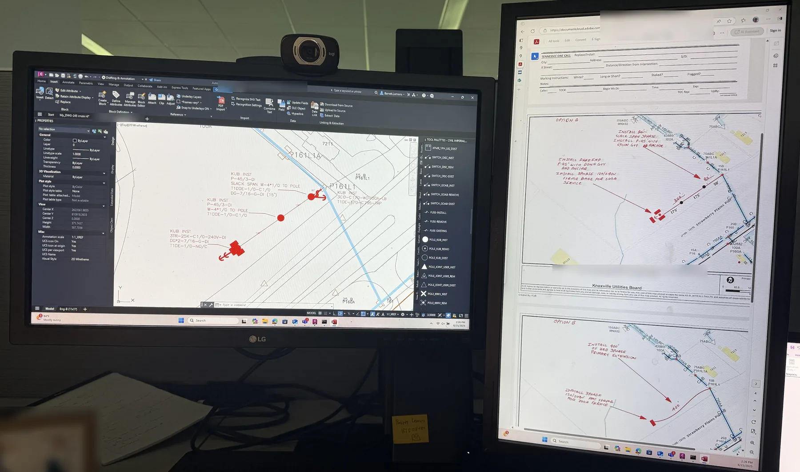

Reading the spec book instead of guessing
For a new sign at Central Magnet Academy, I independently developed two alternative electric service designs — one underground and one pole-mounted — and iterated through several rounds of revision before final review and approval at Knoxville Utilities Board.
The technical work mattered. The professional lesson mattered more.
Two options, same standard
Option A and Option B were not a preference contest. They were two ways to deliver service under the same rules: clearances, materials, constructability, and what the field crew would actually install. Drawing both forced me to understand the constraint set instead of locking onto the first layout that looked plausible on screen.


Redlines are data
My drafts came back more than once for small compliance issues. At first I treated each note as an isolated fix — change this callout, nudge that dimension. That approach was slow and error-prone. The pattern in the redlines was the signal: I was guessing at requirements I had not fully read.
Slowing down was the acceleration
I went through KUB’s full specification book line by line rather than improvising. It felt slower in the afternoon. It made the next revisions faster and cleaner. The fix was not working harder in the same direction. It was changing the method.
It’s fine to ask for help when you’re stuck, and sometimes the fix is slowing down, not working harder in the same direction.
Why this belongs on a résumé story
Utilities and manufacturing hire people who can follow standards without being told twice. The Central Magnet project is the clearest example I have of that habit forming. I am looking for a Summer 2027 internship where careful documentation and standards literacy are part of the job — not optional extras.